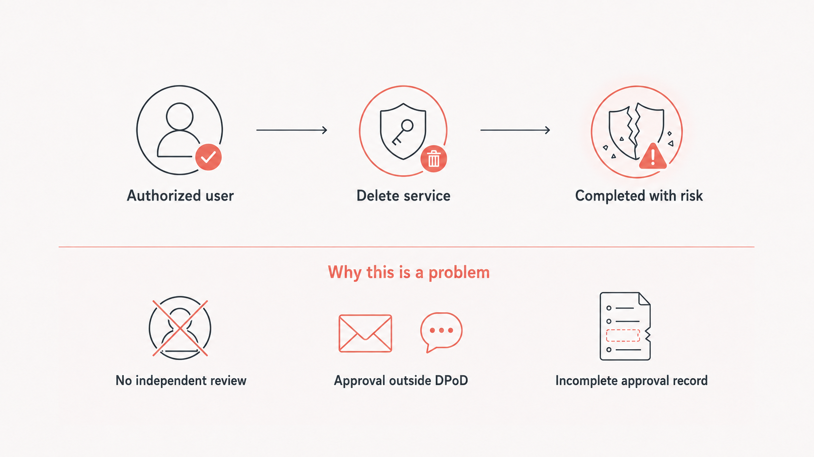
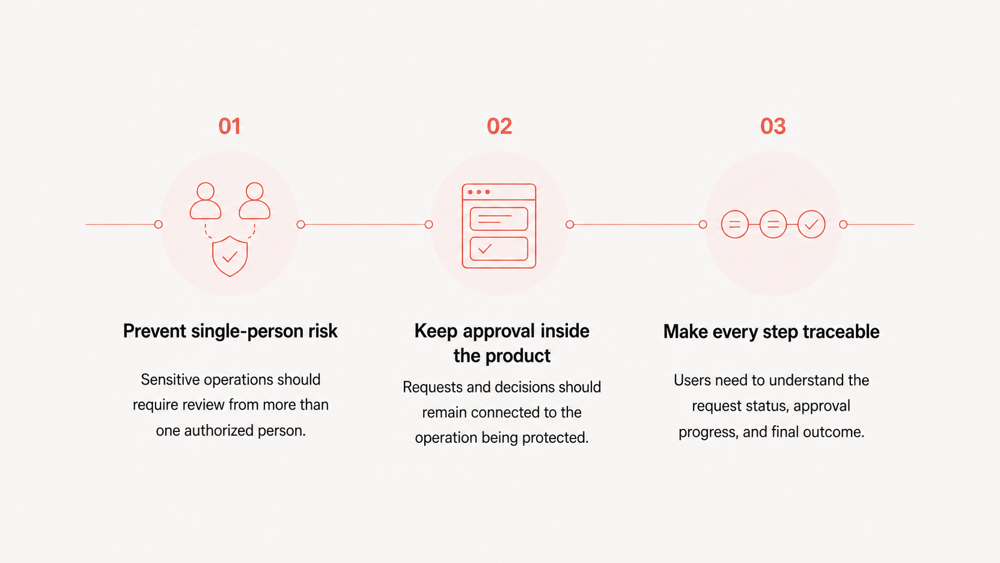
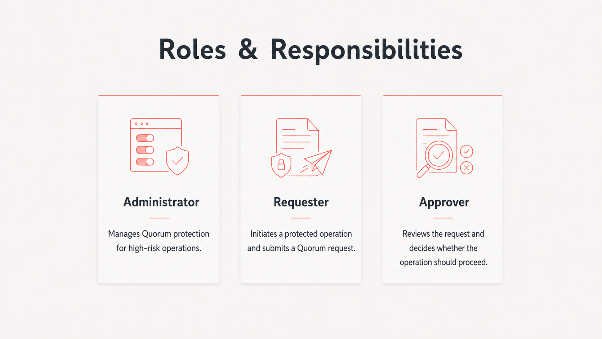
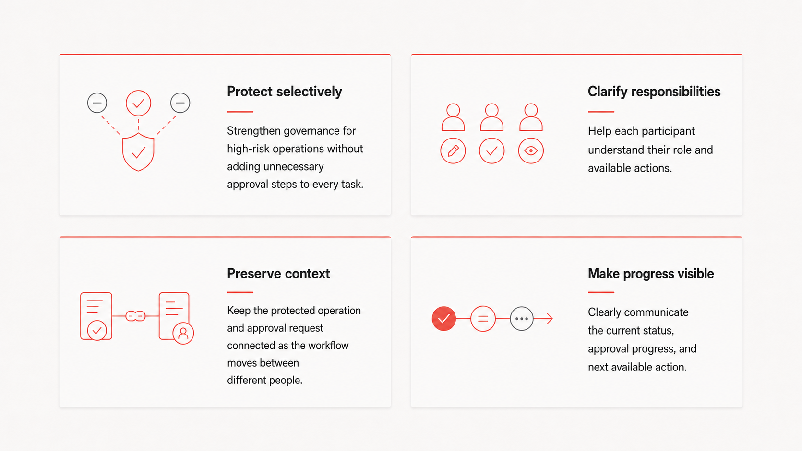
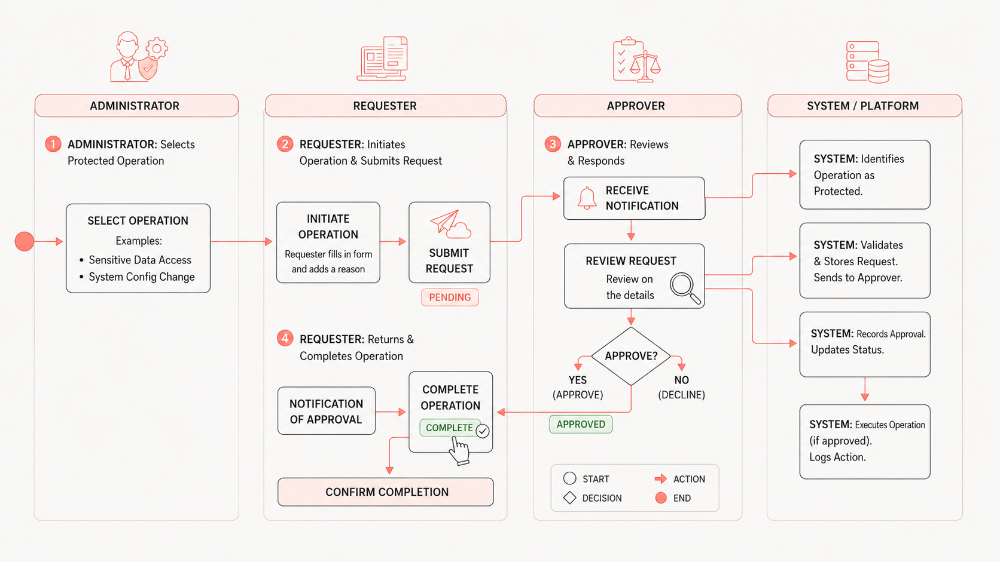

Thales Quorum Approval
Designing a secure and traceable multi-party approval experience for high-risk cryptographic operations
01OVERVIEW
Protecting high-risk operations through multi-party approval
DPoD is Thales’ cloud-based platform for deploying and managing cryptographic services that help organizations protect sensitive data and encryption keys. As the platform expanded to support customers with more complex security and compliance requirements, it needed stronger governance over high-risk operations that could previously be completed by one authorized user.
I led the end-to-end design of Quorum, a multi-party approval capability that requires selected operations to receive approval before they can proceed. The final experience connects policy configuration, request submission, multi-party review, operation execution, and audit history in one secure and traceable workflow.
02WHAT PROMPTED THIS INTERVENTION
Authorization alone did not provide sufficient governance
DPoD controlled which operations each user was authorized to perform. However, some high-impact operations, such as deleting a cryptographic service, could still be completed by one authorized user without independent review. For enterprise customers with strict security and compliance requirements, this created operational risk and limited accountability.
Without a built-in approval mechanism, customers had to coordinate decisions through external channels. This separated approval from the operation it was intended to protect and made it difficult to maintain a complete, traceable record within DPoD.

03KEY INSIGHTS
Customers needed a more accountable way to manage high-risk operations
Customer feedback and stakeholder discussions revealed three core needs: prevent single-person risk, keep approval inside the product, and make every step traceable.

04INITIAL DESIGN CHALLENGE
How might we add an approval safeguard for high-risk operations without disrupting existing DPoD workflows?
05DEEPER DISCOVERY
One protected operation involved multiple roles
Further discussions with product managers revealed an additional layer of complexity: Quorum was not a single-user approval flow. An administrator determines which operations require protection, a requester initiates a protected operation, and predefined approvers review the resulting request.
Each participant needed different information and actions, while the operation context and approval status had to remain consistent as the workflow moved between them.

06REFRAMED DESIGN CHALLENGE
How might we design a Quorum experience that connects policy setup, request submission, and multi-party approval across different user roles?
07DESIGN PRINCIPLES
Four principles guided the Quorum experience

08AI-ASSISTED EXPLORATION
Exploring interface directions with AI
After defining the roles, requirements, and user flow, I used Figma Make to explore interface directions for policy setup, request submission, approval, and status tracking. Structured prompts incorporated the feature requirements, workflow logic, and relevant DPoD design-system patterns.
The generated concepts helped me compare alternative layouts and communicate interactions earlier in the process. I then evaluated and refined them based on usability, accessibility, technical feasibility, and consistency with the existing product.

09DESIGN PROPOSAL
One connected Quorum workflow from policy setup to execution
I designed Quorum as a governance layer embedded within existing DPoD workflows. Administrators manage Quorum protection for high-risk operations, requesters submit approval requests when attempting those operations, and predefined approvers review each request before execution can continue.
Although participants receive different information and actions, the protected operation, approval status, and decision history remain connected throughout the experience.

10DESIGN DECISION #1
Apply Quorum only where additional protection is needed
Requiring approval for every operation would create unnecessary friction. Organizations needed to apply Quorum to high-risk operations while allowing unaffected tasks to continue through their existing workflows.
I designed a centralized policy experience where administrators could review protected operations and enable or disable Quorum policies based on their organization’s security and governance requirements.
11DESIGN DECISION #2
Keep approval connected to the original operation
When a requester initiates a protected operation, the experience needs to explain why approval is required without making the interruption feel like an error or a dead end.
I designed the request as a continuation of the original task. The affected service and operation remain visible, while approvers receive the context needed to evaluate the request. Once approval is granted, the requester can return to complete the original operation.
12DESIGN DECISION #3
Turn complex approval states into clear next steps
A Quorum request can require responses from multiple approvers, so a generic “Pending” status did not provide enough information. Requesters and approvers needed to understand the current progress and whether an action was required from them.
I designed a shared status model that communicates approvals received, remaining requirements, individual responses, and the next available action. This makes the workflow easier to follow from request submission through final authorization.
13USER FEEDBACK & ITERATION
Making Quorum policies editable as governance needs change
The initial design allowed administrators to enable or disable a Quorum policy, but not edit its configuration. Testing revealed that this was too restrictive because an organization’s governance requirements could change over time.
I introduced an Edit Quorum Policy flow that allows administrators to update the policy configuration both before and after it is enabled. This provides greater flexibility without requiring them to disable or recreate the entire policy.
14BUSINESS IMPACT
Strengthening DPoD’s enterprise governance and customer value
Launched in March 2026 after a 12-month initiative, Quorum strengthened DPoD’s support for enterprise security and compliance requirements. The capability expanded from four protected operations in its initial test release to more than 20, allowing customers to apply multi-party authorization across a broader range of high-risk workflows.
A subsequent customer survey found that 92% of respondents were satisfied with DPoD’s functionality. Among surveyed Quorum users, 73% indicated an intention to renew DPoD, demonstrating positive renewal intent among customers using the capability.